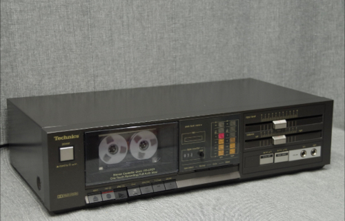
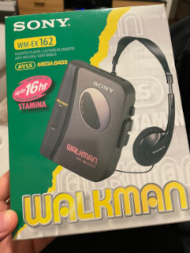
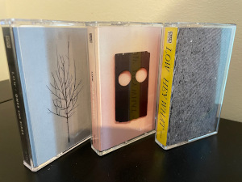
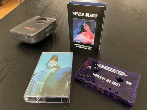

Concert hall
Concert hall
I like to listen to music in an old fashioned, analog way. I grew up among vinyl records and cassette tapes. Vinyl was already fading out, while cassettes were the now. I listened to my parents' tapes a million times and made my own mix tapes. I waited for the billboard charts and request-a-song programs on the radio and recoded my favourites. I also bought a fair share of original tapes from Virgin Megastore. I had my own tape recorder and a walkman I used to take to school and listen to music on the way or during school breaks.
Years later when CDs became popular, I had a collection of CDs too and I burned many of my own CDs, but cassettes always had a special place in my heart.
After many years of listening only digitally, first MP3s on a computer, later on iPod, then on streaming services, I realized how much it affected the way I listened to and discovered music. Digital music formats made skipping songs increadibly effortless, which discourages listening to whole albums. You kind of pick your favouries and skip the rest. I noticed doing that already with CDs, but not with cassettes, where forwarding and rewinding took time and a lot of battery (if on the go). I knew by heart which track will come next and I noticed that I had a special connection to those albums I listened on cassettes.
But streaming had an even bigger impact on my listening habits, making it a much less focused and conscious experience. I just picked an artist I liked and let the algorithm do the rest. It's a great way of of discovering new music you could say. But for me, it wasn't. Music became part of the background noice. I got trapped in one (or a few) genres and I couldn't remember almost any of the artists I was listening to. My playlists and library were full of songs I liked at some point in time, but almost all of them were from different artists I knew nothing about.
I realized this when my son asked what is my favourite band and the only ones that came into my mind were the ones I listed to way before I started using streaming. Whose albums I bought and listened many times. The ones I held in my hand while I listened, staring at the cover art and reading every single line of lyrics, or the bios of the artists.
Discovering music was a completely different experience too. It was more of a conscious activity. Both a personal and a social one. I read magazines, album reviews, picked them up on the radio, went to stores and listened to the ones I think I might like there. But I also got tips and albums from friends. All this have been replaced by automation, making it effortless, but also impersonal and not conscious.
The more choice and selection we have, the less the choice means, and it applies to everything, not only music. If you have 1000 video games on your shelf you can pick from, none of them will become really special to you. Sonic the hedgehog 2 is my all time favourite platform game. Why? Because besides it's an absolute masterpiece, it was my only game cartridge on my Mega Drive for months, before I could afford buying something else. I played it through countless times. I knew every level by heart. I think the same applies to music, and if you want to get that magic back, and increase the quality of your music listening experience, you need to take the control back, make it more conscious and limit your access and selection artificially.
This realization lead me to the decision to buy a tape deck and a Walkman once again. An advantage of tapes compared to vinyl is that there are a wide variety of players of all sizes. But even good quality tape decks can fit into tight spaces, while vinyl players often need a clearance above them for the lid to open. This was a limiting factor for me when deciding on an analog music solution as I had only a shelf under the TV for it in our living room furniture. Another advantage of tapes is their small size. They require less space to store and they allow music to be portable. They also have a decent sound quality (depending on the type and quality of the tape and the players) and a signiture sound.
I chose a used Technics RS-D200 tape deck with two heads, Dolby B, instant recording and manual tape selection. It's still in a very good condition and pretty affordable too.
I was also very happy that I found an unused Walkman WM-EX-162 for a bargain. I had the same model as a child. It doesn't have radio built in, but there is MegaBass, type selection (normal and CrO2/Metal), AVLS (Automatic Volume Limiter System) to protect your ears and it's pretty economical with batteries. Still as new. Perfect for listening to tapes while working or taking a walk.
I still had some old tapes in a shoebox that I can listen to again now. I made some mix tapes from the stuff I really liked recently and I also found and bought several new releases. I started reading music magazines and album reviews again, Trebelzine is my current favourite. I started looking at new cassette releases on Bandcamp and other places too. An often overlooked advantage of cassettes is that it allows independent artists to self-release their work in a physical format. Bandcamp is usually my first choice, as if you buy a physical release from them, you usually get the lossless digital version as well, which is not the case if you buy a physical release from Amazon or other retailers.
One of my biggest musical discoveries last year was Low. I'm so glad I found them! The more I listen, the more I love their albums. They play a minimalistic slowcore indie rock and with amazing vocal harmonies. It's so sad that there won't be more with Mimi's mesmerizing voice. I have the last three Low albums so far, Hey What (2021), Double Negative (2018) and Ones and Sixes (2015).
Another one is Weyes Blood. Natalie Laura Mering has been performing under this stage name since 2003 and developed a unique sound of melancolic chamber pop-rock. I think she is way underrated. I have her latest two albums so far, and Titanic Rising (2019), And in the Darkness, Hearts Aglow (2022) are both among my most listened albums currently.
